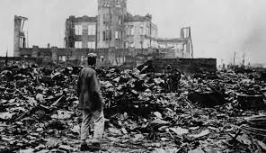

LA SEGUNDA GUERRA MUNDIAL
Segunda Guerra Mundial : Fue el conflicto armado más grande y sangriento de la historia universal en el que se enfrentaron los países que conformaban las Potencias Aliadas y las Potencias del Eje, entre 1939 y 1945. Tras seis años de dura lucha, el 14 de agosto de 1945, se declara el final de la guerra con la victoria de los Aliados ocurrida tras la caída de los regímenes de Adolf Hitler en Alemania y Hideki Tojo en el Imperio del Japón. Cifras conservadoras establecen que la guerra causó la muerte de alrededor de 60 millones de personas[1], siendo la Unión Soviética, China y Alemania, las naciones que más víctimas tuvieron.
Luego de finalizada la guerra el mundo quedó divido en dos bloques, el bloque capitalista, liderado por los Estados Unidos y con influencia sobre Europa Occidental y otros dominios, y el bloque comunista, liderado por la URSS y con influencia sobre Europa del Este.
DATOS GENERALES

En la Segunda Guerra Mundial tomaron parte 72 Estados,[2] los efectivos de todos los ejércitos participantes fueron 110 millones de hombres, de los cuales murieron 34 millones (31 % del total), 28 millones de hombres quedaron mutilados (25 % del total de los efectivos), las bajas en la población civil sobrepasaron los 24,8 millones de personas, desaparecieron más de 5 millones de personas y los gastos se calculan en más de 935 000 millones de dólares.[2] Como consecuencia de la agresión nazi fascista la Unión Soviética perdió el 50 % de su potencial económico, entre ello la vital industria pesada de la Cuenca del Donez y los centros agrícolas de Ucrania y Bielorrusia. Lo cual se explica porque hasta mediados de 1944, un 95 % del potencial de guerra alemán estaba en el frente oriental. Alrededor de 20 millones de ciudadanos de la Unión de Repúblicas Socialistas Soviéticas perdieron su vida y 25 millones sus casas, pues quedaron destruidas por aquella guerra.
A los soviéticos les destruyeron más de 30 000 fábricas; Alemania prácticamente perdió toda su infraestructura industrial: se destruyeron más de 2 250 000 viviendas y otras 2,5 millones fueron parcialmente destruidas. Se dice que quedaron más de 400 millones de metros cúbicos de escombros. China perdió entre 3 y 8 millones de personas, 6 millones de judíos fueron exterminados, dentro del llamado Holocausto judío.
El 13 de febrero de 1945, la aviación aliada destruyó la ciudad de Dresden, en Alemania, donde casi 130 mil personas, (la mayoría de ellos refugiados) murieron a causa de este bombardeo. Otras ciudades como Berlín, Hamburgo, Munich y Nuremberg fueron destruidas en la misma campaña aérea, en cuyos ataques masivos participaron más de 1 000 bombarderos.
.VOLVER A LA PAGINA PRINCIPAL